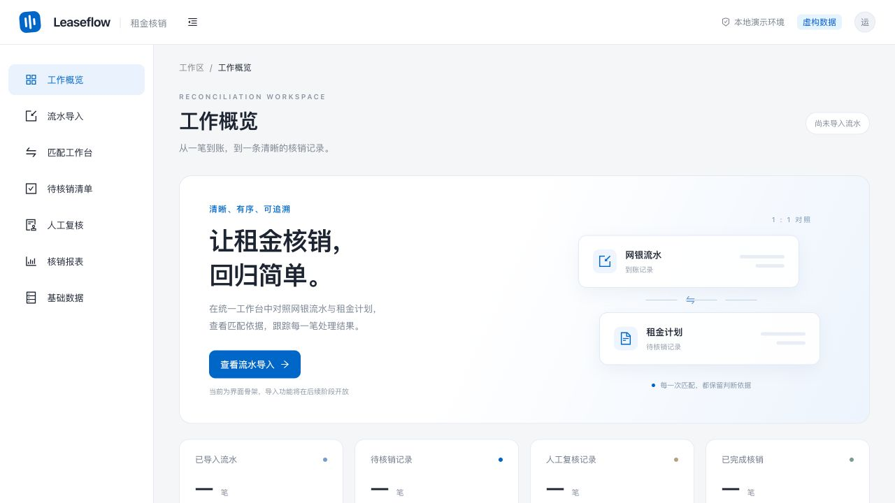

← Back to Portfolio
Rent Reconciliation Workspace
An interactive prototype demonstrating an end-to-end rent reconciliation workflow in financial leasing, built entirely with synthesized enterprise operational data. Desktop browser experience is recommended.

Suggested Walkthrough Order
- System Overview: Explore the core operational modules across the workspace dashboard.
- Entity Linkage: Inspect the relational mapping between enterprise clients, leasing contracts, and rental schedules.
- Bank Statement Ingestion: Navigate to the import tab, download the sample template, and observe simulated statement ingestion into the matching workspace.
- Matching & Review: Review automatic rule matching, manual exception resolution, discrepancy explanations, and reconciliation export summaries.
Demo states are persisted locally in your browser session. You can click "Reset Demo" at any time to restore the initial state. All financial reconciliation operations are simulated for demonstration purposes.
Open Interactive Demo ↗